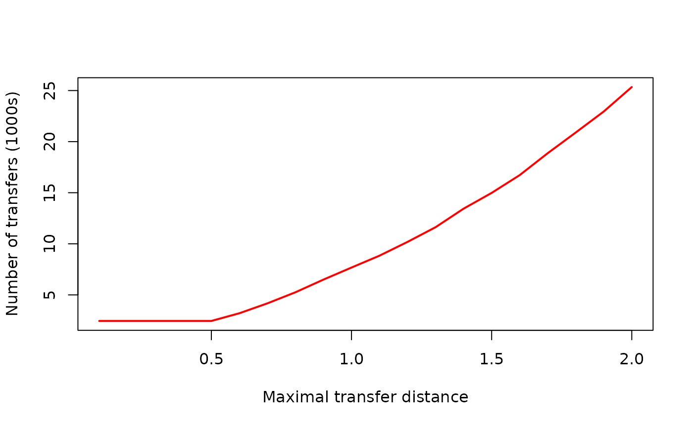
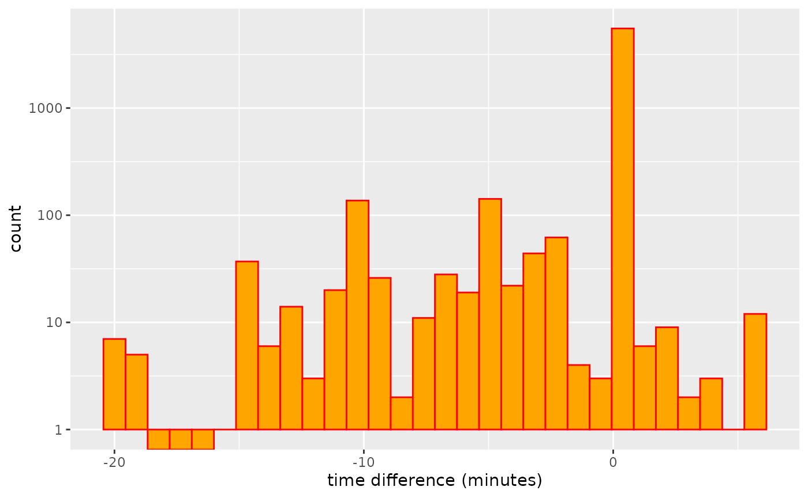
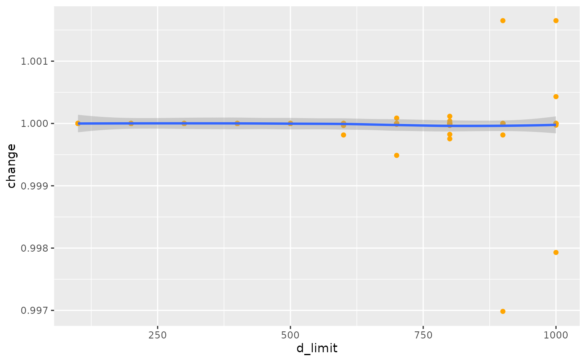

GTFS feeds may include a table of possible transfers between stops,
and potentially between specific connecting services. There feeds are
nevertheless optional, and many feeds omit transfer tables, making them
difficult if not impossible to use for routing. The
gtfsrouter package includes a function, gtfs_transfer_table(),
which calculates and inserts a transfer table into a feed.
This function can also be demonstrated with the very small feed
included with this package, by first running berlin_gtfs_to_zip()
to create the feed in the temporary directory of the current R
session.
library (gtfsrouter)
f <- berlin_gtfs_to_zip ()
gtfs <- extract_gtfs (f, quiet = TRUE)The transfers table of the feed looks like this:
gtfs$transfers## from_stop_id to_stop_id transfer_type min_transfer_time from_route_id
## 1: 000008010205 000008010205 2 300
## 2: 000008010205 000008098205 2 300
## 3: 000008010318 000008010318 2 300
## 4: 000008011460 000008011460 2 300
## 5: 000008012656 000008012656 2 300
## ---
## 9829: 070101051881 070201024602 2 180
## 9830: 070101051881 070101051881 2 120
## 9831: 060230000099 060230000841 2 300
## 9832: 060230000099 060230000842 2 300
## 9833: 060230000099 060230000099 2 180
## to_route_id from_trip_id to_trip_id
## 1: NA NA
## 2: NA NA
## 3: NA NA
## 4: NA NA
## 5: NA NA
## ---
## 9829: NA NA
## 9830: NA NA
## 9831: NA NA
## 9832: NA NA
## 9833: NA NAA transfers table is required for successful routing between different services, like with the following code:
gtfs_route (gtfs,
from = "Friedrichstr.",
to = "Rosenthaler Platz",
start_time = 12 * 3600,
day = "Monday")## route_name trip_name stop_name arrival_time
## 1 S26 S Waidmannslust S+U Friedrichstr. Bhf (Berlin) 12:03:06
## 2 S26 S Waidmannslust S Oranienburger Str. (Berlin) 12:05:12
## 3 S26 S Waidmannslust S Nordbahnhof (Berlin) 12:07:12
## 4 S26 S Waidmannslust S Humboldthain (Berlin) 12:09:54
## 5 S26 S Waidmannslust S+U Gesundbrunnen Bhf (Berlin) 12:11:42
## 6 U8 S+U Hermannstr. S+U Gesundbrunnen Bhf (Berlin) 12:15:30
## 7 U8 S+U Hermannstr. U Voltastr. (Berlin) 12:17:00
## 8 U8 S+U Hermannstr. U Bernauer Str. (Berlin) 12:18:30
## 9 U8 S+U Hermannstr. U Rosenthaler Platz (Berlin) 12:20:00
## departure_time
## 1 12:03:54
## 2 12:05:42
## 3 12:07:42
## 4 12:10:24
## 5 12:12:24
## 6 12:15:30
## 7 12:17:00
## 8 12:18:30
## 9 12:20:00That trip requires a transfer, and is possible because the feed has a table specifying the possibility of transferring at the “S+U Gesundbrunnen Bhf” station. Removing the transfers table demonstrates what typically happens when attempting to calculate routes on feeds which lack this information:
gtfs$transfers <- NULL
gtfs_route (gtfs,
from = "Friedrichstr.",
to = "Rosenthaler Platz",
start_time = 12 * 3600,
day = "Monday")## NULLNo transfer is able to be make, and so no route is found. The
gtfs_transfer_table() function automatically calculates
and adds a transfer table to a feed, enabling it once again to be used
to generate routes:
gtfs <- gtfs_transfer_table (gtfs, d_limit = 200)
gtfs_route (gtfs,
from = "Friedrichstr.",
to = "Rosenthaler Platz",
start_time = 12 * 3600,
day = "Monday")## route_name trip_name stop_name arrival_time
## 1 S7 S Ahrensfelde Bhf S+U Friedrichstr. Bhf (Berlin) 12:00:36
## 2 S7 S Ahrensfelde Bhf S Hackescher Markt (Berlin) 12:02:54
## 3 S7 S Ahrensfelde Bhf S+U Alexanderplatz Bhf (Berlin) 12:04:36
## 4 U8 S+U Wittenau S+U Alexanderplatz (Berlin) [U8] 12:07:30
## 5 U8 S+U Wittenau U Weinmeisterstr. (Berlin) 12:09:00
## 6 U8 S+U Wittenau U Rosenthaler Platz (Berlin) 12:10:30
## departure_time
## 1 12:01:24
## 2 12:03:24
## 3 12:05:24
## 4 12:07:30
## 5 12:09:00
## 6 12:10:30That route is considerably faster than the original one, because it
utilises a transfer (at “S+U Alexanderplatz”) which is not in the
original transfers table. That particular transfer highlights the most
important caveat to using the
gtfs_transfer_table() function: that tables may and
often will still require some degree of manual checking and adjustment
to make them usable, as demonstrated in the following section.
The above example first removed the transfer table by setting
gtfs$transfers <- NULL. Applying the
gtfs_transfer_table() function to a feed which already
has a transfer table will extend that table by adding any additional
transfers within the specified distance (see below). Any transfers already present
in the transfers table will be retained as is, and the table will be
extended by adding any new transfers not present in the original
table.
Transfers are calculated based on distance alone, and do not utilise any information on routes or trips. Some feeds, such as the example Berlin feed included with this package, include transfer information between specific routes and services, resulting in a transfers table in which station pairs are repeated numerous times for distinct combinations of routes and services:
gtfs <- extract_gtfs (f, quiet = TRUE) # 'f' is the location generated above
nrow (gtfs$transfers)## [1] 9833
length (which (!duplicated (gtfs$transfers [, c ("from_stop_id", "to_stop_id")])))## [1] 2229The table only has 2,229 unique pairs of from and
to stops, yet details 9,833 possibles ways of transferring
between these stops. Removing and re-generating these transfers gives
the following results:
gtfs$transfers <- NULL
gtfs <- gtfs_transfer_table (gtfs)
nrow (gtfs$transfers)## [1] 1894The gtfs_transfer_table()
function generates -335 additional transfers not present in the
original feed, but as stated contains no information on transfers
between specific routes or trips. Alternatively, using the function to
extend the existing table, rather than re-generate it, gives the
following result:
gtfs <- extract_gtfs (f, quiet = TRUE)
gtfs <- gtfs_transfer_table (gtfs)
nrow (gtfs$transfers)## [1] 10369Note that each call to gtfs_transfer_table()
will only extend the table through adding any transfers not present in
the previous table, and that no transfers will be removed. The following
code uses the d_limit parameter described below to calculate transfer
tables for increasing maximal transfer distances.
gtfs <- extract_gtfs (f, quiet = TRUE)
vapply (0:10, function (i) {
gtfs <- gtfs_transfer_table (gtfs, d_limit = i * 100)
return (nrow (gtfs$transfers))
}, integer (1))## [1] 9834 10291 10369 10477 10665 10923 11677 12645 13729 14971 16149The transfer table increases in size with each call, and retains all transfers generated from all previous calls. Because each call involves extending the transfer table, the table at each stage may be used for routing with transfers out to each specified distance. Subsequently reducing the transfer distance would then not be appropriate, as the table would still retain all transfers at previously-calculated (longer) distances:
gtfs <- gtfs_transfer_table (gtfs, d_limit = 100)
nrow (gtfs$transfers)## [1] 10291In this case, the table would first have to be removed
(gtfs$transfers <- NULL), and the recalculated at the
specified distance.
gtfs$transfers <- NULL
gtfs <- gtfs_transfer_table (gtfs, d_limit = 100)
nrow (gtfs$transfers)## [1] 1816This section demonstrates that transfer tables generated using the
gtfs_transfer_table() function often need to be
manually modified to ensure sensible results. The second route generated
above after using the
gtfs_transfer_table() function includes a transfer at
“S+U Alexanderplatz” from a route named “S7” to one named “U8”. This
train station is in fact one of the largest stations in Berlin, with the
“S” routes using elevated platforms above ground, and the “U” denoting
underground. The “U8” in particular is quite a long way underground, and
while transfer in the indicated time of just under three minutes may be
theoretically possible, it would likely require running, and ought not
be generally presumed to reflect a viable transfer.
Note further that the actual locations of these stations can be extracted with the following lines:
r <- gtfs_route (gtfs,
from = "Friedrichstr.",
to = "Rosenthaler Platz",
start_time = 12 * 3600,
day = "Monday",
include_ids = TRUE)
stns <- r$stop_id [3:4] # the transfer station IDs
gtfs$stops [match (stns, gtfs$stops$stop_id), ]## stop_id stop_code stop_name stop_desc stop_lat
## 1: 060100003723 S+U Alexanderplatz Bhf (Berlin) 52.52151
## 2: 070201083602 S+U Alexanderplatz (Berlin) [U8] 52.52162
## stop_lon location_type parent_station wheelchair_boarding
## 1: 13.41127 0 900000100003 NA
## 2: 13.41212 0 900000100705 NAThe distance between them is:
s <- gtfs$stops [match (stns, gtfs$stops$stop_id), ]
as.numeric (geodist::geodist (s [1, ], s [2, ]))## [1] 59.22425The transfer table algorithm presumes a pedestrian speed of 4km / hour, which is 1.11 m/s, meaning this distance should be able to be covered in just over 50 seconds. In reality, it would be impossible to run between these two stops in 50 seconds, primarily because of a need to traverse 3 or 4 vertical levels.
We now demonstrate how to add more realistic transfer times, by
adding additional time penalties for transferring between underground
and overground services, to reflect the extra time required to travel up
or down between stops. The sample feed included with this package only
has “U” and “S” routes. The following code demonstrates how to use this
distinction to add additional time penalties to the transfers table. The
first step is to find the trip_id values of all “S” and “U”
services, which is itself a two-step procedure to first extract
route_id values and then match these to
trip_id values. Procedures may vary between feeds, but in
the case of Berlin, the routes are all identified by their
route_short_name, as follows:
S_routes <- gtfs$routes$route_id [grep ("^S", gtfs$routes$route_short_name)]
U_routes <- gtfs$routes$route_id [grep ("^U", gtfs$routes$route_short_name)]
S_trips <- gtfs$trips$trip_id [which (gtfs$trips$route_id %in% S_routes)]
U_trips <- gtfs$trips$trip_id [which (gtfs$trips$route_id %in% U_routes)]The following code then uses those trip_id values to
extract all corresponding stops.
S_stops <- gtfs$stop_times$stop_id [which (gtfs$stop_times$trip_id %in% S_trips)]
S_stops <- unique (S_stops)
U_stops <- gtfs$stop_times$stop_id [which (gtfs$stop_times$trip_id %in% U_trips)]
U_stops <- unique (U_stops)Although in Berlin the stops for “U” and “S” services are strictly separated, this may not be the case for all other feeds. It might, for example, be useful to remove stops which are used by both types of services, leaving stops that can only serve as transfers between different kinds of services. The following two lines suffice for that:
S_stops <- S_stops [which (!S_stops %in% U_stops)]
U_stops <- U_stops [which (!U_stops %in% S_stops)]All we then need to do is to add additional transfers times for any transfers between these two sets of stops, arbitrarily choosing here a value of 2 minutes:
index <- which ((gtfs$transfers$from_stop_id %in% S_stops &
gtfs$transfers$to_stop_id %in% U_stops) |
(gtfs$transfers$from_stop_id %in% U_stops &
gtfs$transfers$to_stop_id %in% S_stops))
gtfs$transfers$min_transfer_time [index] <-
gtfs$transfers$min_transfer_time [index] + 120Our route query then returns the following:
gtfs_route (gtfs,
from = "Friedrichstr.",
to = "Rosenthaler Platz",
start_time = 12 * 3600,
day = "Monday")## route_name trip_name stop_name arrival_time
## 1 S5 S Strausberg Nord S+U Friedrichstr. Bhf (Berlin) 12:03:06
## 2 S5 S Strausberg Nord S Hackescher Markt (Berlin) 12:05:24
## 3 S5 S Strausberg Nord S+U Alexanderplatz Bhf (Berlin) 12:07:06
## 4 U8 U Paracelsus-Bad S+U Alexanderplatz (Berlin) [U8] 12:12:30
## 5 U8 U Paracelsus-Bad U Weinmeisterstr. (Berlin) 12:14:00
## 6 U8 U Paracelsus-Bad U Rosenthaler Platz (Berlin) 12:15:30
## departure_time
## 1 12:03:54
## 2 12:05:54
## 3 12:07:54
## 4 12:12:30
## 5 12:14:00
## 6 12:15:30The route follows exactly the same connections, but now allows a far
more realistic time of just over 5 minutes for the transfer at
Alexanderplatz. This exemplifies that, while the
gtfs_transfer_table() function can “automatically”
generate transfer tables, these will often still need manual tweaking
and adjustment to reflect the unique characteristics of any given
system.
The
gtfs_transfer_table() function includes an additional
parameter, d_limit, quantifying the maximum permissible
walking distance between transfers, with a default value of 200 metres.
Increasing this value generates greater numbers of possible transfers,
as the following code illustrates, starting by removing and re-creating
the transfer table, followed by adding the additional penalties for
transfers between the two types of services, this time constructed as a
function for easy re-use:
gtfs$transfers <- NULL
gtfs <- gtfs_transfer_table (gtfs, d_limit = 500)
transfer_penalties <- function (gtfs, penalty = 120) {
S_routes <- gtfs$routes$route_id [grep ("^S", gtfs$routes$route_short_name)]
U_routes <- gtfs$routes$route_id [grep ("^U", gtfs$routes$route_short_name)]
S_trips <- gtfs$trips$trip_id [which (gtfs$trips$route_id %in% S_routes)]
U_trips <- gtfs$trips$trip_id [which (gtfs$trips$route_id %in% U_routes)]
S_stops <- gtfs$stop_times$stop_id [which (gtfs$stop_times$trip_id %in% S_trips)]
S_stops <- unique (S_stops)
U_stops <- gtfs$stop_times$stop_id [which (gtfs$stop_times$trip_id %in% U_trips)]
U_stops <- unique (U_stops)
S_stops <- S_stops [which (!S_stops %in% U_stops)]
U_stops <- U_stops [which (!U_stops %in% S_stops)]
index <- which ((gtfs$transfers$from_stop_id %in% S_stops &
gtfs$transfers$to_stop_id %in% U_stops) |
(gtfs$transfers$from_stop_id %in% U_stops &
gtfs$transfers$to_stop_id %in% S_stops))
gtfs$transfers$min_transfer_time [index] <-
gtfs$transfers$min_transfer_time [index] + 120
return (gtfs)
}
gtfs <- transfer_penalties (gtfs)Submitting the same routing query now gives the following:
gtfs_route (gtfs,
from = "Friedrichstr.",
to = "Rosenthaler Platz",
start_time = 12 * 3600,
day = "Monday")## route_name trip_name stop_name arrival_time
## 1 S5 S Strausberg Nord S+U Friedrichstr. Bhf (Berlin) 12:03:06
## 2 S5 S Strausberg Nord S Hackescher Markt (Berlin) 12:05:24
## 3 S5 S Strausberg Nord S+U Alexanderplatz Bhf (Berlin) 12:07:06
## 4 U8 U Paracelsus-Bad S+U Alexanderplatz (Berlin) [U8] 12:12:30
## 5 U8 U Paracelsus-Bad U Weinmeisterstr. (Berlin) 12:14:00
## 6 U8 U Paracelsus-Bad U Rosenthaler Platz (Berlin) 12:15:30
## departure_time
## 1 12:03:54
## 2 12:05:54
## 3 12:07:54
## 4 12:12:30
## 5 12:14:00
## 6 12:15:30The route departs and arrives at the same time, but now includes an additional walking transfer over a distance which can be calculated by repeating the lines above:
r <- gtfs_route (gtfs,
from = "Friedrichstr.",
to = "Rosenthaler Platz",
start_time = 12 * 3600,
day = "Monday",
include_ids = TRUE)
s <- gtfs$stops [match (r$stop_id [2:3], gtfs$stops$stop_id), ]
as.numeric (geodist::geodist (s [1, ], s [2, ]))## [1] 614.5902At a speed of 1.11m/s, this would take just under 6 minutes. With the additional penalty of 2 minutes for transferring from an “S” to a “U” service, this transfer would require just under 8 minutes, which is less than the time given in the route of just over 8.5 minutes. This demonstrates how increasing maximal walking distances increases numbers of possible transfers.
The following code shows the sizes of transfer tables as a function of maximal walking distances:
d_limit <- 1:20 * 100
n <- vapply (d_limit, function (i) {
gtfs$transfer <- NULL
gtfs <- gtfs_transfer_table (gtfs, d_limit = i)
nrow (gtfs$transfers)
}, integer (1))
d_limit <- d_limit / 1000 # in km
n <- n / 1000 # in thousands
plot (d_limit, n, type = "l", col = "red", lwd = 2,
xlab = "Maximal transfer distance",
ylab = "Number of transfers (1000s)")
The line is initially flat because this number (around 3,300) is the number of transfers possible between stops which have identical spatial locations (and so a distance of 0.0). Numbers of transfers can never be less than this number.
The following section delves further into the effect of this distance
limit, though examining the result of gtfs_traveltimes()
for different distance limits.
The preceding result might be sensibly interpreted to reflect
something like a plausible upper limit for a transfer, with a distance
of 370 metres, plus a vertical transfer between underground and
overground services, expected to be covered in under 8.5 minutes. This
might – and indeed likely should – in turn be considered to demonstrate
how this d_limit parameter, along with any additional
manual adjustments applied to transfer tables, like the
transfer_penalties() function constructed above, need to be
carefully considered with regard to concrete knowledge of a particular
system.
The gtfsrouter package is nevertheless not intended to
be used only to generate individual routing queries, but also includes
the
gtfs_traveltimes() function designed to enable
efficient estimation of travel times anywhere in a system from any
nominated station. The result of this function will obviously be
influenced by the transfers table, and in particular by the maximal
walking distance used to construct transfer tables with the
gtfs_transfer_table() function.
The effect of different distances can also be examined using the
internal data set provided with this package. The following function
generates travel times for a given d_limit a random sample
of starting stations:
library (dplyr)
travel_times_d_limit <- function (gtfs, from, d_limit = 200) {
gtfs$transfers <- NULL
gtfs <- gtfs_transfer_table (gtfs, d_limit = d_limit)
gtfs <- transfer_penalties (gtfs)
start_time_limits <- 12:13 * 3600
get_one_times <- function (gtfs, from, start_time_limits) {
x <- gtfs_traveltimes (gtfs,
from = from,
start_time_limits = start_time_limits,
quiet = TRUE)
ret <- NULL
if (nrow (x) > 0)
ret <- data.frame (from = from,
to = x$stop_id,
duration = as.integer (x$duration) / 60)
# duration in minutes
return (ret)
}
res <- lapply (from, function (i)
get_one_times (gtfs, i, start_time_limits))
res <- do.call (rbind, res) %>%
group_by (from, to) %>%
summarise (duration = mean (duration), .groups = "drop")
res$d_limit <- d_limit
return (res)
}This function returns travel times from all stations listed in
from to all other (reachable) stations for the specified
value of d_limit. The following lines then compare these
travel times between identical origin and destination stations for a
range of distance limits.
from <- sample (gtfs$stops$stop_name, size = 10)
d_limit <- 1:10 * 100
x <- lapply (d_limit, function (i)
travel_times_d_limit (gtfs, from = from, d_limit = i))
xall <- do.call (rbind, x) [, c ("from", "to")]
xall <- xall [which (!duplicated (xall)), ]
for (i in seq (x)) {
y <- left_join (xall, x [[i]], by = c ("from", "to"))
xall [paste0 ("d_", x [[i]]$d_limit [1])] <- y$duration
}
index <- which (xall$d_1000 != xall$d_100)
# record number of stations for which travel times did not change:
nsame <- nrow (xall) - length (index)
xall <- xall [index, ]
# travel times only:
times <- xall %>% select (!c ("from", "to"))
# differences with each increase in d_limit:
times <- t (apply (times, 1, function (i)
diff (i)))
times <- data.frame (t = as.vector (times))
library (ggplot2)
ggplot (times, aes (x = t)) +
stat_bin (bins = 30, col = "red", fill = "orange") +
scale_y_log10 () +
xlab ("time difference (minutes)")
And these additional transfer possibilities can make a significant
difference to estimated travel times. Note, however, that the travel
times only changed for 305 stations, while the value of
nsame value recording numbers of stations for which travel
times did not change was 4,350. Travel times may also increase as
additional transfers may be used to reduce numbers of connecting
services required for a particular trip, and the algorithm generally
searches for connections with minimal numbers of transfers.
The following code the quantifies the overall effect of these reductions in travel times, measured as the linear reduction in comparison with travel times calculated using the original transfers table provided with the feed. The function also returns the proportion of all stations for which travel times were affected by the modified transfer table.
transfer_difference <- function (gtfs,
nsamples = 10,
d_limit = 200,
day = "Monday",
start_time_limits = 12:13 * 3600) {
g1 <- data.table::copy (gtfs)
g1 <- gtfs_timetable (g1, day = day)
g2 <- data.table::copy (gtfs)
g2 <- gtfs_transfer_table (g2, d_limit = d_limit, quiet = TRUE)
g2 <- gtfs_timetable (g2, day = day)
get1 <- function (gtfs, gtfs2, start_time_limits) {
from <- sample (gtfs$stops$stop_name, size = 1)
x1 <- gtfs_traveltimes (gtfs,
from = from,
start_time_limits = start_time_limits,
quiet = TRUE)
x2 <- gtfs_traveltimes (gtfs2,
from = from,
start_time_limits = start_time_limits,
quiet = TRUE)
if (nrow (x1) == 0L | nrow (x2) == 0L)
return (rep (NA, 2))
x2 <- data.frame (stop_id = x2$stop_id,
duration2 = x2$duration)
x2 <- dplyr::left_join (x1, x2, by = "stop_id")
dat <- data.frame (x = as.integer (x2$duration) / 60,
y = as.integer (x2$duration2) / 60)
mod <- lm (y ~ x + 0, data = dat)
return (c (prop = length (which (dat$x != dat$y)) / nrow (dat),
change = as.numeric (mod$coefficients)))
}
vapply (seq (nsamples), function (i)
get1 (g1, g2, start_time_limits),
numeric (2),
USE.NAMES = FALSE)
}That function can then be used to loop over a range of values of
d_limit, and to examine the results with the following
code:
d_limit <- 1:10 * 100
d <- lapply (d_limit, function (i)
transfer_difference (gtfs,
nsamples = 20,
d_limit = i,
day = "Monday",
start_time_limits = 12:13 * 3600))
d <- lapply (seq_along (d_limit), function (i)
data.frame (d_limit = d_limit [i],
prop = d [[i]] [1, ],
change = d [[i]] [2, ]))
d <- do.call (rbind, d)
ggplot (d, aes (x = d_limit, y = change)) +
geom_point (pch = 19, col = "orange") +
geom_smooth (method = "loess", formula = "y ~ x")
That result shows that travel times do decrease with increasing
limits of maximal transfer distance, although the overall effect is very
minimal. The object d also records the proportion of
station pairs for which modifications to the transfers table actually
changed travel times, which in this case amounts to a mean value of
0.001, clearly revealing that very few trips actually change.
The following results apply the code given above to the full feed for
Stuttgart, Germany, showing what might more typically be expected as the
d_limit parameter is increased.
The decrease in travel times in this case approaches 15% as transfers are implemented with walks of up to 1km, although values are highly variable depending on starting stations. The equivalent proportion of stops for which these transfers actually change travel times is shown in the following graph:
ggplot (d, aes (x = d_limit, y = prop)) +
geom_point (pch = 19, col = "orange") +
geom_smooth (method = "loess", formula = "y ~ x")While travel times to most stops still remain unaffected, the proportion affected does increase to a large minority of around 30-40% as transfer distances approach 1km.